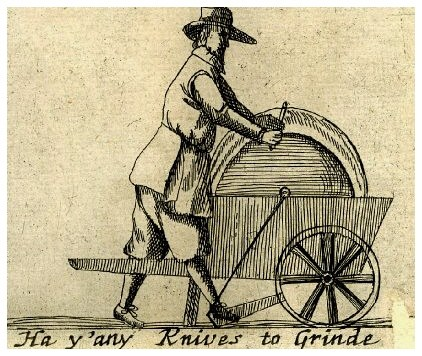
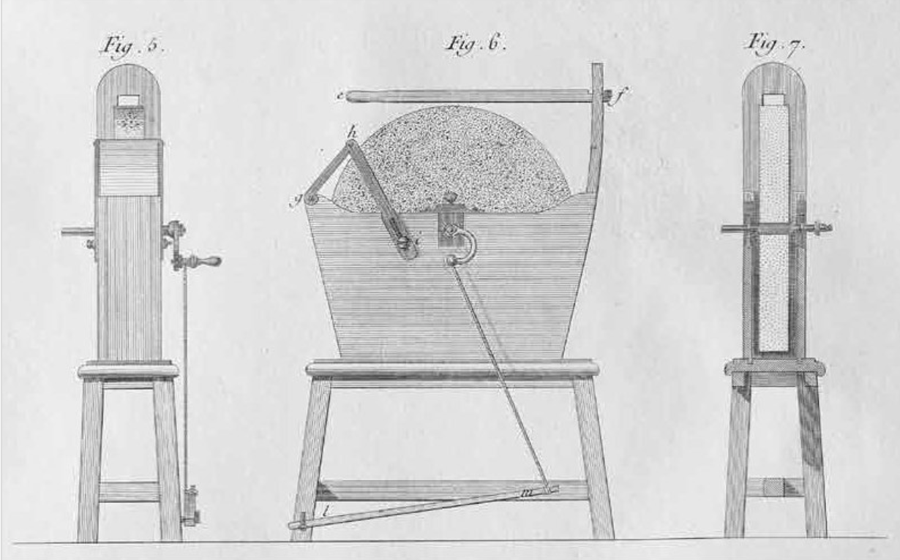

Le Rémouleur (the Knifegrinder)
by Francisco de Goya (Spanish, 1746-1828)
oil on canvas, 1806-1812
|

The Knife-Grinders
by Gustave Courbet (French, 1819-1877)
oil on canvas, 1848-1850
|

Man supervising another sharpening an axe with a boy turning the wheel
by Biagio Pupini (Italian, 1511-1575)
pen and ink and wash
|

Sharpening of Knives
by David Teniers the Younger (Flemish, 1610-1690)
|

Sharpening Workman
by Hartman Schopperum
printed at Frankfurt on the Maine (Frankfurt), Germany in 1548
|

Knife Sharpener
by William Henry Pyne (English, 1769-1843)
1808
|
|

Detail of Knife Grinder from "The Cryes of London, with their Severall Notes"
by Pricke
1655
|

Knives or Cisers to Grind
by Marcellus Laroon (Dutch, 1653-1702)
1688
|

Knives, Scissors and Razors to Grind
by Francis Wheatley (English, 1747-1801)
c.1792
|

Knives to Grind
by William Marshall Craig (English, 1788-1827)
1801
|

Knives to Grind
by Thomas Rowlandson (English, 1757-1827)
c.1804
|

Grindstone by André Jacob Roubo
by André Jacob Roubo (French, 1739-1791)
|

A water wheel for sharpening
Page 1130, figure 1029 in his 1850 book, Turning and Mechanical Manipulation, Vol. 3 - Abrasive and Other Processes not Accomplished with Cutting Tools
by Charles Holtzapffel (English, 1806-1847)
|

A small water wheel for sharpening
Page 1132, figure 1030 in his 1850 book, Turning and Mechanical Manipulation, Vol. 3 - Abrasive and Other Processes not Accomplished with Cutting Tools
by Charles Holtzapffel (English, 1806-1847)
|